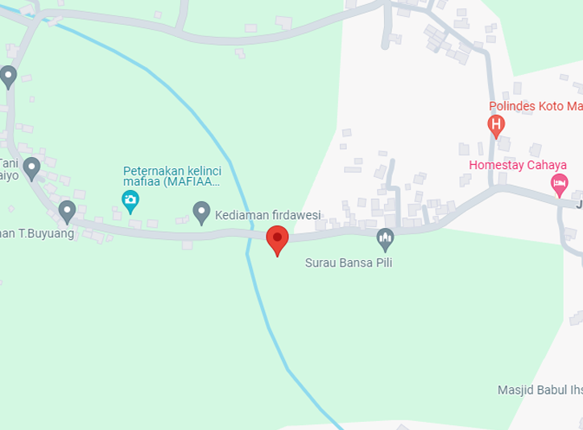

Tanpa mengurangi rasa hormat, Undangan Digital ini merupakan undangan resmi dari kami sekeluarga, di karenakan keterbatasan kami dalam mengantar undangan secara langsung. Suatu kehormatan bagi kami apabila Bapak/Ibu/Saudara/i berkenan hadir dan memberikan do'a restu pada pernikahan kami
Jumat/19 April 2024
10.00 WIB s.d selesai
Kantor Urusan Agama (KUA) Tilatang Kamang
Sabtu/20 April 2024
10.00 WIB s.d selesai
Bukik Gadang, Jorong Koto Malintang, Nagari Koto Tangah, Kec. Tilatang Kamang
Tanpa mengurangi rasa hormat, Undangan Digital ini merupakan undangan resmi dari kami sekeluarga, di karenakan keterbatasan kami dalam mengantar undangan secara langsung. Suatu kehormatan bagi kami apabila Bapak/Ibu/Saudara/i berkenan hadir dan memberikan do'a restu pada pernikahan kami
Klik pada gambar untuk membuka google maps
